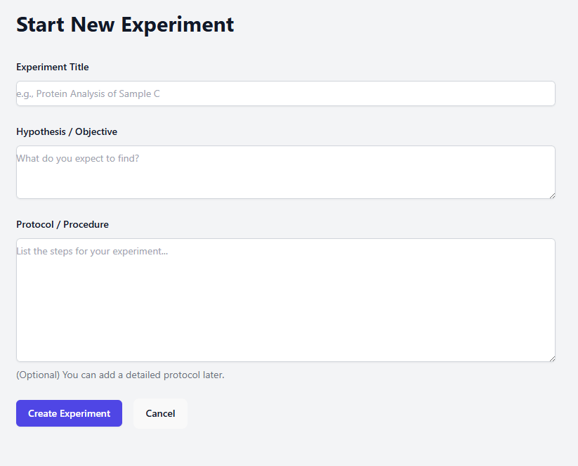
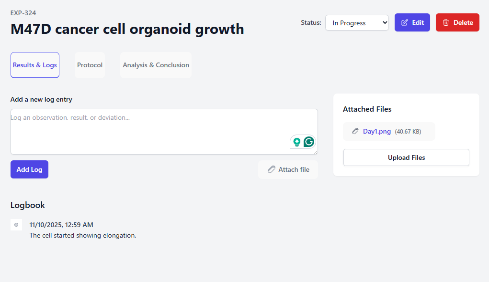
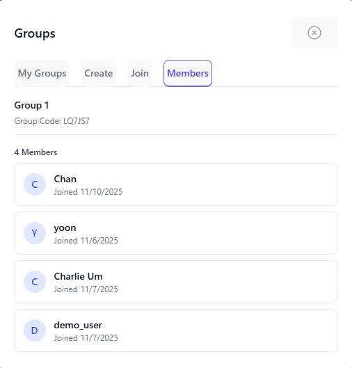
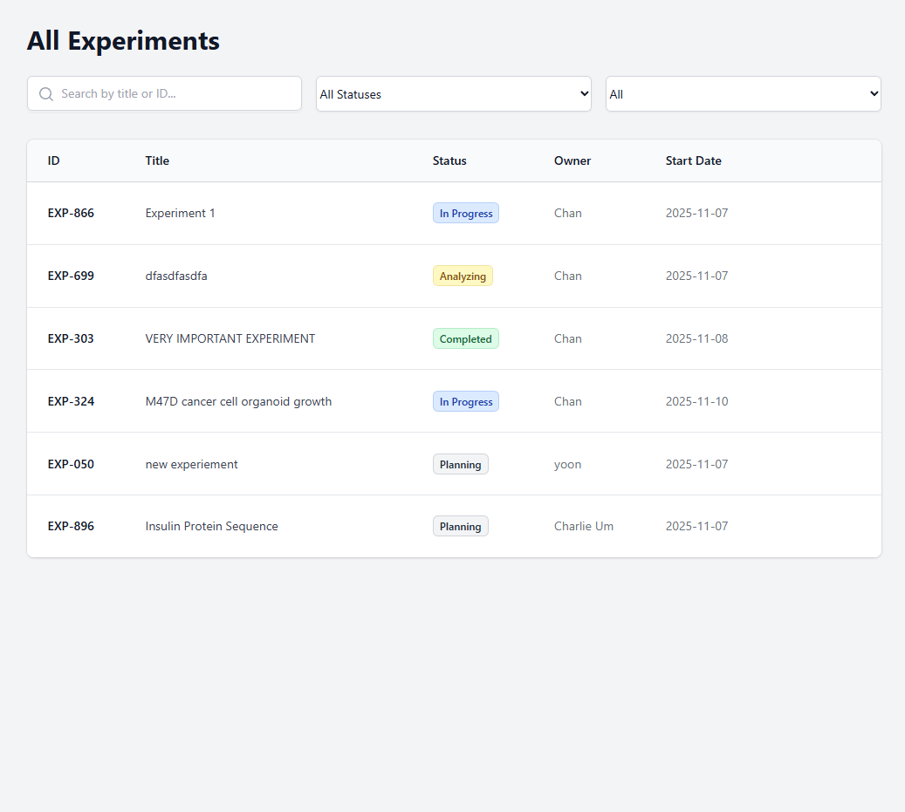

01The problem
In many research environments, experimental data is scattered across multiple spreadsheets. This spreadsheet-based approach is manual and error-prone, and it makes querying, analyzing, or collaborating on data difficult. I saw a need for a centralized, reliable system that researchers could trust.
02My solution
I designed and built the Lab Experiment Tracker, a full-stack web application with a clean, simple interface for researchers to log experiment parameters, upload results, and track progress. The system is backed by a normalized SQLite schema that models the relationships between researchers, groups, and datasets, which keeps data consistent and makes analysis simple.
03Key features

Writing new experiments
Create and initialize new experiments, organized by date, status, and project type for easy tracking.

Logging experimental data
Log and update parameters, results, and observations in one organized interface instead of clunky spreadsheets.

Group membership
Share experiments with lab members and keep everyone working from the same records.

View member experiments
Browse and filter experiments from all group members to follow the team's progress.
04Tech stack
- Frontend
- React, Tailwind CSS, HTML, CSS, JavaScript
- Backend
- Flask, SQLAlchemy, REST API
- Database
- SQLite
- Deployment
- GCP
05Potential impact
The system helps researchers track experiments and data more efficiently, so they can spend their time on analysis and interpretation instead of manually maintaining spreadsheets.
06Status
This project is still in development. Code and a live demo will be linked here soon.